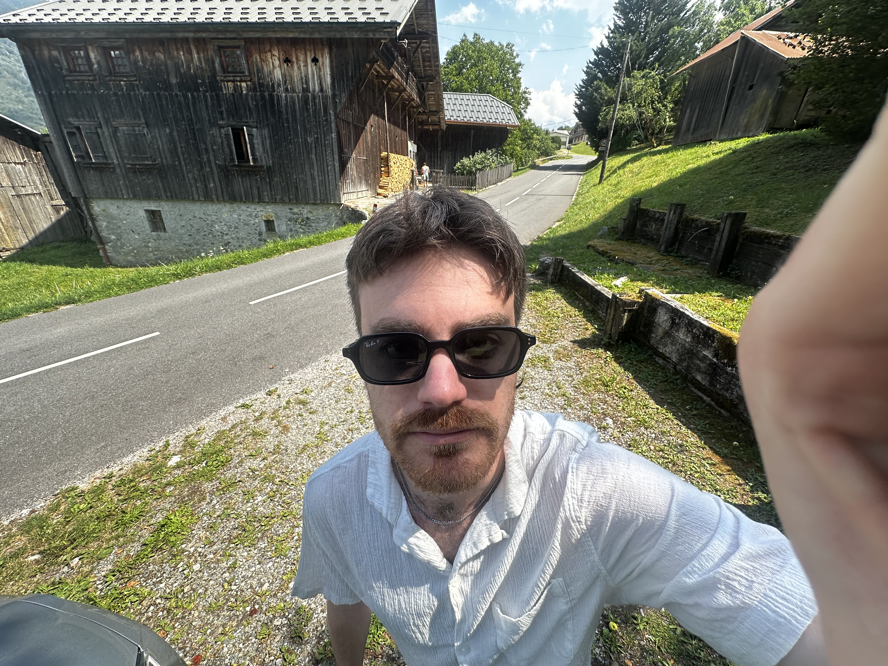

Who am I?
Hi! Welcome to my website. I was born and raised in Berkeley, California. I love backpacking, playing cards, singing karaoke, and dancing.
For the code behind this effect, see my Bill Atkinson dithering project in Python .
Selected Writing
Edwards Wilkinson Terrain Erosion Using Fourier Transforms
Maximum Likelyhood Expectation Maximization Uncertainty Quantification
Modeling the Hyperbolic Plane using Crochet
Posters
Hover to pause. Click a poster to view it full size.

Résumé
Teaching portfolio
NEED IMAGES AND EXAMPLES OF WORKSHEETS